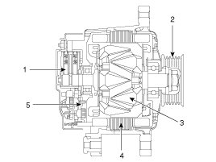
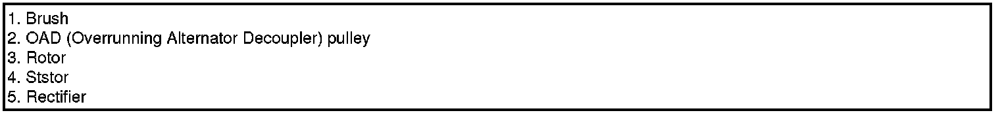

Alternator
Description
The charging system included a battery, an alternator with a built-in regulator, and the charging indicator light and wire.
The Alternator has eight built-in diodes, each rectifying AC current to DC current.
Therefore, DC current appears at alternator "B" terminal.
In addition, the charging voltage of this alternator is regulated by the battery voltage detection system.
The alternator is regulated by the battery voltage detection system. The main components of the alternator are the rotor, stator, rectifier, capacitor brushes, bearings and OAD (Overrunning Alternator Decoupler) pulley. The brush holder contains a built-in electronic voltage regulator.


Alternator Management System
Alternator management system controls the charging voltage set point in order to improve fuel economy, manage alternator load under various operating conditions, keep the battery charged, and protect the battery from over-charging. ECM controls generating voltage by duty cycle (charging control, discharging control, normal control) based on the battery conditions and vehicle operating conditions.
The system conducts discharging control when accelerating a vehicle. Vehicle reduces an alternator load and consumes an electric power form a battery.
The system conducts charging control when decelerating a vehicle. Vehicle increases an alternator load and charges a battery.